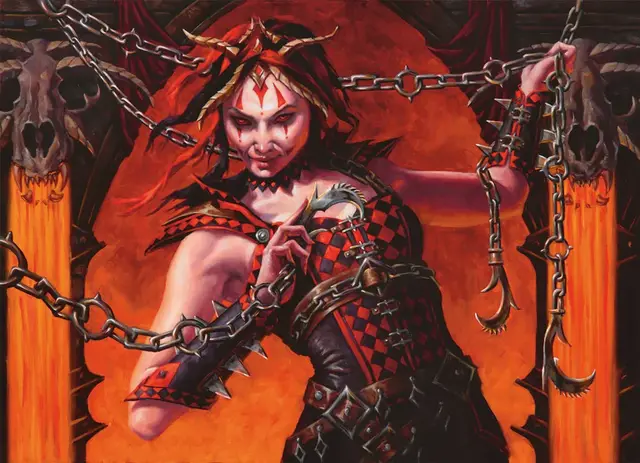

Кровавая Ведьма
Blood Witch
Средний Гуманоид (Любая раса), хаотично-злой

Класс Доспеха 12 (15 с доспехом мага)
Хиты 78 (12к8 + 24)
Скорость 30 футов
| мод | спас | ||
|---|---|---|---|
| СИЛ | 16 | +3 | +3 |
| ЛОВ | 14 | +2 | +2 |
| ТЕЛ | 15 | +2 | +2 |
| мод | спас | ||
|---|---|---|---|
| ИНТ | 13 | +1 | +1 |
| МДР | 9 | −1 | +2 |
| ХАР | 19 | +4 | +7 |
Навыки Восприятие +2, Запугивание +7, Магия +4, Скрытность +5
Сопротивление урону психическая энергия
Чувства тёмное зрение 120 футов, пассивное Восприятие 12
Языки Бездны, плюс один любой язык (обычно Общий)
Опасность 7 (2900 опыта)
Бонус мастерства +3
Особенности
Танец кровавой ведьмы. Ведьма может использовать бонусное действие, чтобы контролировать движение одного видимого ею существа, проклятого заклинанием сглаз [hex], в пределах 30 футов от себя. Существо должно преуспеть в спасброске Харизмы Сл 15 или в случае провала должно реакцией переместиться на 30 футов в направлении, выбранном ведьмой.
Дьявольское зрение. Магическая тьма не мешает тёмному зрению ведьмы.
Врожденное колдовство. Базовой характеристикой ведьмы является Харизма (Сл спасброска от заклинания 15, +7 к попаданию атаками заклинаниями). Она может накладывать следующие заклинания, не требующие материальных компонентов:
• Неограниченно: смена обличья [alter self], обнаружение магии [detect magic], мистический заряд [eldritch blast] (вариант 11-го уровня), псевдожизнь [false life], левитация [levitate] (только на себя), доспехи мага [mage armor] (только на себя);
• 3/день каждое: адское возмездие [hellish rebuke], сглаз [hex], палящий луч [scorching ray] (вариант 3-го уровня);
• 1/день каждое: круг смерти [circle of death], речь златоуста [enthrall], внушение [suggestion].
Действия
Мультиатака. Ведьма совершает две атаки: одну Длинным мечом и одну Коротким мечом.
Длинный меч. . Рукопашная атака оружием: +6 к попаданию, досягаемость 5 фт., одна цель. Попадание: 7 (1к8 + 3) рубящего урона.
Короткий меч. . Рукопашная атака оружием: +6 к попаданию, досягаемость 5 фт., одна цель. Попадание: 6 (1к6 + 3) колющего урона.
Описание
Кровавые ведьмы воображают себя посредниками между Ракдосом и его культом — вершиной его духовенства, его доверенными советниками и посланниками, сообщающими его волю разрозненным группам и начальникам манежа. Культ Ракдоса не признает никакой власти, кроме Ракдоса, и повелителю демонов не нужны советники. Тем не менее, кровавые ведьмы умны, харизматичны и могущественны, поэтому их голоса имеют определенный вес.
Ведьмы крови стремятся защитить культ от внешнего вмешательства и наказать тех, кто приносит вред гильдии. Они претендуют на грандиозные титулы, такие как Мучитель войеков, чтобы высмеять своих намеченных жертв.